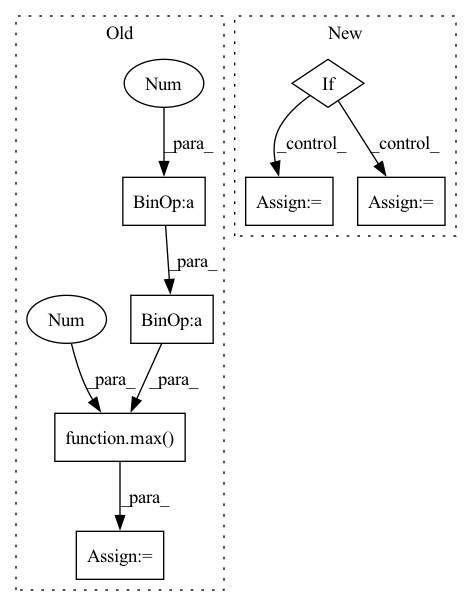

Pattern ID :16237

Before Change
def __getitem__(self, idx):
// get index data
data = self.data.iloc[self.data_index.index_start.iloc[idx] : self.data_index.index_end.iloc[idx] + 1].copy()
// todo: handle missings -> fill them up with strategy
// determine data window
sequence_length = len(data)
max_prediction_length = self.max_prediction_length
if self.randomize_length is not None:
// modify sequence length
sequence_length_prob, encode_length_probability = Beta(*self.randomize_length).sample(torch.Size([2]))
sequence_length = int(max(1, Binomial(sequence_length, sequence_length_prob).sample()))
max_prediction_length = int(max(1, Binomial(max_prediction_length, encode_length_probability).sample()))
if sequence_length < len(data):
data = data.iloc[-sequence_length:] // select subset of sequence
encode_length = min(max(0, sequence_length - max_prediction_length), self.max_encode_length)
decode_length = sequence_length - encode_length
// extract data
After Change
max(self.min_prediction_length, Binomial(decode_length, encode_length_probability).sample()),
)
// select subset of sequence of new sequence
if new_encode_length + new_decode_length < len(data):
data = data.iloc[encode_length - new_encode_length : encode_length + new_decode_length]
encode_length = new_encode_length
decode_length = new_decode_length
assert decode_length > 0
assert encode_length >= 0
In pattern: SUPERPATTERN
Frequency: 3
Non-data size: 7
Instances
Fragment ID: 54246634
Project Name: jdb78/pytorch-forecasting
Commit Name: 79cfec0818dbe78d8773534e6ce8f5fd578c3c3a
Time: 2020-06-22
Author: beitner.jan@bcg.com
File Name: temporal_fusion_transformer_pytorch/data.py
M Class Name: TimeSeriesDataSet
N Class Name: TimeSeriesDataSet
M Method Name: __getitem__(2)
N Method Name: __getitem__(2)
M Parent Class: Dataset
N Parent Class: Dataset
M File Name: temporal_fusion_transformer_pytorch/data.py
N File Name: temporal_fusion_transformer_pytorch/data.py
M Start Line: 149
M End Line: 164
N Start Line: 186
N End Line: 220
'>
Before Change
// derive shift of loc towards smaller value with respect to seasonality
max_period = max(self.period, self.seasonality)
self.time_delta = 1/max_period
self.level_smoothing_alpha = max(1, 5 - 0.01 * max_period)
self.slope_smoothing_alpha = max(1, 5 - 0.01 * max_period)
// penalize less for seasonality
self.seasonality_smoothing_alpha = max(1, 5 - 0.01 * (max_period/self.seasonality))
self.level_smoothing_max = 1.0
After Change
// self.seasonality_smoothing_max = 1.0
// shape: the greater the more concentrate
// loc: mode of the pdf
if self.regressor_col is None:
self.level_smoothing_loc = 0.3
self.slope_smoothing_loc = 0.3
self.seasonality_smoothing_loc = 0.3
self.level_smoothing_shape = 1.0
self.slope_smoothing_shape = 1.0
self.seasonality_smoothing_shape = 1.0
else:
// TODO: consider condition on initial adj. R-Squared
self.level_smoothing_loc = 0.1
self.slope_smoothing_loc = 0.1
self.seasonality_smoothing_loc = 0.1
self.level_smoothing_shape = 5.0
self.slope_smoothing_shape = 5.0
'>
Fragment ID: 54246632
Project Name: uber/orbit
Commit Name: d2383d94fe0b5f5de729b9cb5dd0cf8496c345bc
Time: 2020-06-07
Author: edwinng@uber.com
File Name: orbit/lgt.py
M Class Name: LGT
N Class Name: LGT
M Method Name: _setup_computed_smoothing_params(1)
N Method Name: _setup_computed_smoothing_params(1)
M Parent Class: Estimator
N Parent Class: Estimator
M File Name: orbit/lgt.py
N File Name: orbit/lgt.py
M Start Line: 195
M End Line: 203
N Start Line: 205
N End Line: 221
'>
Before Change
df_train (pd.DataFrame): training data
df_val (pd.DataFrame): validation data
n_samples = len(df) - n_lags + 2 - (2 * n_forecasts)
n_samples = n_samples if inputs_overbleed else n_samples - n_lags
if 0.0 < valid_p < 1.0:
n_valid = max(1, int(n_samples * valid_p))
else:
assert valid_p >= 1
assert type(valid_p) == int
n_valid = valid_p
After Change
df_train (pd.DataFrame or list of pd.Dataframe): training data
df_val (pd.DataFrame or list of pd.Dataframe): validation data
if isinstance(df, list):
df_list = df.copy()
df_train_list = list()
df_val_list = list()
if local_modeling:
for df in df_list:
df_train, df_val = single_split_df(df, n_lags, n_forecasts, valid_p, inputs_overbleed)
df_train_list.append(df_train)
df_val_list.append(df_val)
df_train, df_val = df_train_list, df_val_list
else:
threshold_time_stamp = find_time_threshold(df_list, n_lags, valid_p, inputs_overbleed)
df_train, df_val = split_considering_timestamp(df_list, threshold_time_stamp)
else:
df_train, df_val = single_split_df(df, n_lags, n_forecasts, valid_p, inputs_overbleed)
return df_train, df_val
'>
Fragment ID: 54246638
Project Name: ourownstory/neural_prophet
Commit Name: d07b79568ef37904de81ba00248764233fbaa8c8
Time: 2021-10-07
Author: ourownstory@users.noreply.github.com
File Name: neuralprophet/df_utils.py
M Class Name: AnonimousClass
N Class Name: AnonimousClass
M Method Name: split_df(6)
N Method Name: split_df(5)
M Parent Class:
N Parent Class:
M File Name: neuralprophet/df_utils.py
N File Name: neuralprophet/df_utils.py
M Start Line: 297
M End Line: 312
N Start Line: 506
N End Line: 539